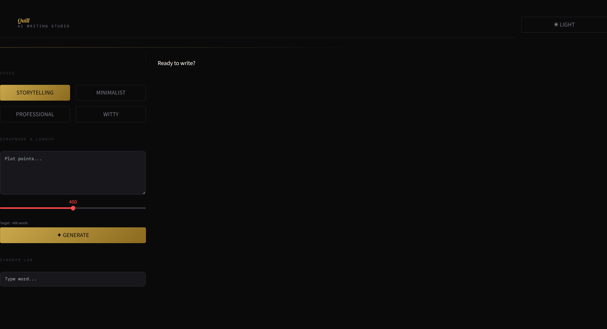

Quill — AI Writing Studio
A locally-hosted AI writing assistant built with Streamlit and Ollama. Quill runs a local LLM (Llama 3.1 8B) to generate and refine prose in four distinct voice styles, with a live synonym lookup, a session history timeline, and a full dark/light theme. No API keys or internet connection required.
What is it?
Quill is a personal AI writing tool built to run entirely on a local machine. It wraps the Ollama inference server in a polished Streamlit web interface, letting you generate long-form prose, articles, and narratives without sending any data to an external API.
The project started as a simple prompt wrapper (V1 — "Personalized Article Lab") and evolved across six iterations into a full creative writing environment with a distinct typographic identity, real-time draft editing, and session state management.
Choose between Storytelling, Professional, Minimalist, or Witty — the selected style is injected into every generation prompt.
Drop raw notes, plot points, or bullet ideas into the scrapbook field. The model expands them into a polished draft at the target word count.
Send a plain-English instruction to rewrite the current draft — remove lists, adjust the title, shift tone — without starting over.
NLTK WordNet lookup returns up to eight contextual synonyms instantly, displayed as chips alongside the editor.
Up to ten draft snapshots are stored per session. Any previous state can be restored with one click, and the full history can be cleared.
A full dual-theme system with toggling between a deep charcoal dark mode and a warm off-white light mode, both sharing the same gold accent palette.
Architecture
Quill has a simple two-tier architecture: a Streamlit front-end running in the browser,
and the Ollama inference server running locally on localhost:11434.
All communication happens over a plain HTTP POST request — no streaming, no websockets.
The entire app state is managed through Streamlit's st.session_state:
the current draft, selected voice, dark mode preference, and the history list.
Every action that modifies the draft first saves a snapshot to the history stack
before overwriting, so every generation and refinement is reversible.
generate()
The scrapbook text and target word count are bundled with the selected voice style into a single prompt. The model returns a complete draft which replaces the canvas.
polish()
The instruction text is prefixed to the current draft and sent back to the model. The voice style is intentionally excluded so the refinement follows the literal instruction rather than regenerating from scratch.
How to Run
- 1 Start Ollama and pull the model:
ollama pull llama3.1:8b - 2 Install dependencies:
pip install streamlit requests nltk - 3 Launch the app:
streamlit run article_lab.py(or double-clickwrite_tool.bat) - 4 Select a voice, enter notes, set a target word count, and click Generate.
Typographic Identity
A deliberate typographic system separates the interface chrome from the writing surface. The navigation and controls use DM Mono — a monospace face that reinforces the tool-like feel. The main editor canvas switches to Spectral, a serif reading typeface, so the draft feels like a document rather than a form field. Headlines use DM Serif Display in italic for the wordmark.
The colour palette is anchored by a warm gold accent
(#C9A84C in dark mode, #8B6A1F in light mode) against near-black
surfaces. This combination deliberately avoids the cold blue-white palette common in
developer tools, giving Quill a more editorial, print-inspired character.
Used for all labels, buttons, metadata, and the synonym chips. Uppercase tracking gives controls a refined, typeset appearance.
The main text area uses a 1.15rem Spectral serif with generous 1.8 line spacing and large side padding, mimicking a manuscript page.
Active states, synonyms, and stat values all use the gold accent, creating a consistent focal hierarchy without any additional hue.
The Clear History button uses a muted red (#8B3A3A) with reduced opacity at rest and full saturation on hover — a standard pattern for irreversible actions.
Main Interface

Iterative Development
The project was developed across six versions, each adding a focused set of improvements over the previous iteration:
-
◆
V1 — Personalized Article Lab
Initial proof-of-concept. A basic Streamlit form with a hardcoded system prompt enforcing anti-AI-cliché rules, platform selection (blog, LinkedIn, email), and a simple NLTK synonym lookup.
-
◆
V2 / V3 — Visual redesign
Renamed to Quill. Introduced the dark/light theme system, the DM Serif Display wordmark, the gold accent palette, and a left-nav / right-canvas two-column layout.
-
◆
V4 — Voice system
Replaced the platform selector with four named writing voices (Storytelling, Professional, Minimalist, Witty). Added the Refine Draft panel and the editable word count slider.
-
◆
V5 — Session timeline
Added the history snapshot system. Each generation and polish action saves the previous draft. Snapshot restoration fixed a
TypeErrorcaused by an incorrect Streamlit button keyword argument. -
◆
V6 (current) — Polish
Added the Clear History button with danger styling, extended the history limit to ten snapshots, added the 200-word option to the word count slider, and introduced live word count and active voice display in the stat bar.